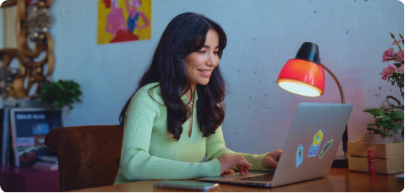

Поможем составить резюме
Разберём ваш опыт в удобном формате: на онлайн-консультации с экспертом или сами опишем всё в готовом резюме и сопроводительном письме
Мы знаем, как справиться с трудностями
-
Хочу получать больше приглашений от работодателей
-
Не зовут на собеседования
-
Хочу грамотно преподнести свои навыки и достижения
-
Не знаю, как сделать резюме актуальным под запросы рынка и компаний
-
Хочу выделиться среди других кандидатов
-
Нет времени на обновление резюме и сопроводительного
С чем поможем
-

Поможем описать ваш опыт и кейсы
Вместе с экспертом погрузитесь в ваш опыт и разберёте его. Поговорите о том, как правильно презентовать себя и на чём сделать акцент, чтобы в компании заметили ваше резюме.
-
Подскажем, как правильно оформить резюме
Эксперт расскажет, как лучше приоритизировать информацию, о чём рассказать сначала, а что можно опустить ниже. Также поможет выбрать правильный шаблон и аккуратно разделить текст на блоки.
-
Объясним, на что смотрят работодатели
Вам помогут эксперты с опытом рекрутмента в крупных корпорациях или небольших стартапах. Они действующие специалисты, поэтому разбираются в процессе найма и поделятся практическими советами, как адаптировать резюме под нужный тип компании.
-
Расскажем, где искать вакансии
→ в локальные и международные компании
Эксперт изучит вашу цель и подберёт подходящие площадки для поиска работы. Расскажет, как работать с зарубежными компаниями и заказчиками, что для этого нужно, а также поможет найти альтернативные иностранные площадки.
Как проходит подготовка
-
Сколько у вас займёт времени:
Около 3 часов
-
Разбираете резюме и сопроводительное письмо
Встречаетесь с экспертом, рассказываете о ваших целях и опыте, обсуждаете текущие версии резюме и письма
-
Намечаете план действий
Что останется сделать, чтобы доработать резюме и сопроводительное
-
Получаете рекомендации эксперта в чате
Общие рекомендации, тезисы, дополнительные ссылки
-
Дорабатываете по рекомендациям эксперта
В течение недели вносите изменения и задаёте вопросы в чате. Эксперт проверяет результаты и делится советами, что можно улучшить.
-
Сколько у вас займёт времени:
Около 30 минут
-
Эксперт уточняет ваш запрос
Описываете опыт и желаемую позицию
-
Отвечаете на вопросы эксперта
На коротком звонке
-
Получаете готовое резюме и сопроводительное
Через 2–5 дней
Стоимость
Стоимость 4 500 ₽
-
предварительный анализ вашего опыта
-
консультация с экспертом — 1 час
-
рекомендации и план от эксперта
-
самостоятельная подготовка резюме и сопроводительного письма
-
помощь в доработке и сопровождение в чате — в течение 1 недели
Стоимость 5 500 ₽
-
вы рассказываете о своём опыте и желаемой позиции
-
мы отравляем вам готовое резюме и сопроводительное письмо — через 2–5 дней
-
сопровождаем в чате и отвечаем на вопросы — в течение 1 недели